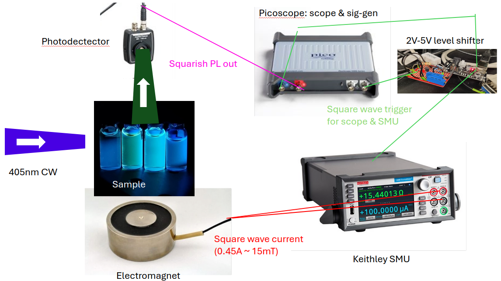

Module qscope.docs.mpl
MagnetoPhotoLuminescence
This page contains (some) documentation for the MPL system/code.
Goals
- Measure the time-dependence of the MPL contrast of a sample with a simple, versatile system.
Physical setup

The MPL setup I have designed has no pulseblaster. The common clock signal is generated by a picoscope (5000a) sig-gen. This can only produce up to 2V, and the Keithley (SMU 2450), which is used as a voltage supply, requires a 5V (3.3 minimum) logic input. To solve this problem, I made a 2V-5V level shifter (see below). The 2450 is programmed over usb (visa) with a trigger model, to switch quickly between voltage on and off - this part was tricky! The 2450 is triggered by rising edges for 'on' AND 'off' - so for a square wave of voltage at 1Hz, the clock is programmed to output a 2Hz signal (first rising edge turns voltage on, second turns if off, in a cycle). The 2450 then directly drives the electromagnet. The PL is collected onto a photodetector, which is read onto the picoscope (Channel B), as well as the gate signal (Channel A) for completeness. By comparing the gate signal to the PL we can analyse the response of the sample to magnetic fields.
The above experiment is run using the qscope mpl trigtime command, and you can test the electromagnet response with the command qscope mpl trigtrace. This command requires you do disconnect the photodetector from Channel B on the picoscope, and instead connect it in parallel across the electromagnet (e.g. at the 2450).
I am intending to write another command to test the electromagnet response by measuring across a series resistor, I will endeavor to come back and document that.
Software
To run the software navigate (in anaconda prompt) to Qscope (e.g. on Zyla it's at C://Qscope), activate the conda env (conda activate ./conda_env), and then test you have access to qscope (qscope --tree).
Trigtime
Use trigtime to characterise the electromagnet:
$ qscope mpl trigtime --help
Usage: qscope mpl trigtime [OPTIONS]
Test timing synchronization between AWG trigger and SMU response.
Physical Connections: AWG Out ─┬─> Channel A (monitor clock)
└─> SMU Digital Input (pin 3)
SMU Out ──> Channel B (monitor current)
Verifies:
1. AWG signal generation
2. SMU trigger detection and response time
3. Current switching timing/delays
Usage `qscope mpl trigtime -n zyla -p mpl_cds -c 0.45 -f 0.25 -d 10 -s 1e7
-dr 5000`
Options:
-n, --system-name TEXT Name of the system configuration [required]
-p, --project-name TEXT Project name for saving results
Signal Parameters:
-f, --frequency FLOAT Square wave frequency in Hz (default: 1.0)
-d, --duration FLOAT Test duration in seconds (default: 1.0)
-c, --current FLOAT Test current in amps (default: 0.1A)
Electromagnet Configuration:
--source-mode [current|voltage]
SMU source mode (default: voltage)
-r, --coil-resistance FLOAT Electromagnet coil resistance in ohms
(default: 27.0)
-ar, --additional-resistance FLOAT
Additional resistance in series with coil in
ohms (default: 0.0)
-vl, --voltage-limit FLOAT Maximum voltage to apply (default:
calculated from current and resistance)
--force-sourcing Force operation even when approaching SMU
limits (use with caution)
Hardware Configuration:
-s, --sample-rate FLOAT Digitizer sample rate in Hz (default: 1e6)
-dr, --downsample-ratio INTEGER
Hardware downsampling ratio (must be >=1,
default: 1)
--smu-address TEXT Optional VISA address of SMU
Diagnostic Options:
-diag, --diagnostic Run in diagnostic mode to check trigger
signals
-v, --verbose Enable verbose logging
-ccl, --check-config-lists BOOLEAN
Check the TRIGGER configuration lists
--help Show this message and exit.
Trigtrace
Use trigtrace to characterise the MPL response of a sample:
$ qscope mpl trigtrace --help
Usage: qscope mpl trigtrace [OPTIONS]
Measure PL response to triggered magnetic field changes.
Physical Connections: AWG Out ─┬─> Channel A (monitor clock)
└─> SMU Digital Input (pin 3)
PL In ────> Channel B (photodetector)
Pre-measurement checks:
- Validates all device connections
- Checks signal levels are within range
- Verifies trigger configuration
Parameter Groups:
Measurement: Current, frequency, duration, averages
Hardware: Sample rate, ranges, coupling, trigger settings
Data Collection: Save options, trace display
Logging: File/console logging, paths, levels
Options:
-n, --system-name TEXT Name of the system configuration [required]
-p, --project-name TEXT Project name for saving results
--detrend / --no-detrend Remove linear trend from PL signal (corrects
for photobleaching)
Measurement Parameters:
-c, --current FLOAT Peak current amplitude in amps (default:
0.1)
-f, --frequency FLOAT Operational frequency in Hz (default: 1.0)
-d, --duration FLOAT Measurement duration in seconds (defaults to
1/f)
-a, --averages INTEGER Number of measurement sequences to average
(default: 1)
Electromagnet Configuration:
--source-mode [current|voltage]
SMU source mode (default: voltage)
-r, --coil-resistance FLOAT Electromagnet coil resistance in ohms
(default: 27.0)
-ar, --additional-resistance FLOAT
Additional resistance in series with coil in
ohms (default: 0.0)
Hardware Configuration:
-s, --sample-rate FLOAT Digitizer sample rate in Hz (default: 1e6)
--pl-range FLOAT Voltage range for PL channel in V (default:
0.5)
--pl-coupling [AC|DC] PL channel coupling (default: DC)
--trigger-threshold FLOAT Scope trigger threshold in volts (default:
2.5)
-dr, --downsample-ratio INTEGER
Hardware downsampling ratio (must be >=1,
default: 1)
--trigger-source [FREE|CLOCK]
Scope trigger source (default: FREE)
--smu-address TEXT Optional VISA address of SMU
-vl, --voltage-limit FLOAT Maximum voltage to apply (default:
calculated from current and resistance)
--force-sourcing Force operation even when approaching SMU
limits (use with caution)
Plotting Parameters:
--fit / --no-fit Fit exponential curves to transitions
(default: disabled)
--fit-type [single|double] Type of exponential fit to use (default:
single)
--plot-pulses / --no-plot-pulses
Plot detailed pulse analysis for each
transition (default: disabled)
Saving/Output:
--save / --no-save Save measurement data to file (default:
enabled)
--show-individual / --no-show-individual
Plot individual traces along with average
(default: True)
Logging:
-ltf, --log-to-file / --no-log-to-file
Enable/disable logging to file (default:
enabled)
-lts, --log-to-stdout / --no-log-to-stdout
Enable/disable console logging (default:
enabled)
-lp, --log-path TEXT Custom path for log file (default: auto-
generated)
-cpl, --clear-prev-log / --no-clear-prev-log
Clear previous log file on startup (default:
enabled)
-ll, --log-level TEXT Logging level (DEBUG, INFO, WARNING, ERROR)
(default: INFO)
--help Show this message and exit.
Other docs
See lab-amp for a discussion of the construction of the amplifier/level shifter, and rlc-optim for a discussion of inductance & optimising temporal response therein.
Limitations
- The photodetector will only be able to pick up strong signals - but it is faster than the more sensitive camera. The photodetector experiment is also much faster to set up.
- The picoscope can measure up to +-20V, at a timebase/duration dependent on sampling rate etc.
- The picoscope can generate signals at 0.025Hz to 20MHz, up to +-2V.
- The 2450 can measure up to 1A and source up to 20V.
- We are limited in speed by the electromagnet's inductance. We can add resistors to damp any underdamping (ringing), and reduce the rise time.
Tips & tricks
-
First open up the picoscope software (cannot be running when you run the
qscopesoftware!!) and optimise the fibre coupling, ensure the photodetector gain does not saturate it (2V limit), and make note of the voltage output to use for the (next nearest)pl-rangeoption. -
Make sure that the level shifter is on when you want to run the above commands - but please turn it off when you're leaving the lab. It is an inverting amplifier, so it is outputing 5V (to the keithley) when it is NOT triggered. I'd rather not have 5V running around the lab constantly and without much insulation (my bad).
-
Use voltage sourcing - current sourcing needs a sort of PID loop to lock on to the current you ask for, very slow!